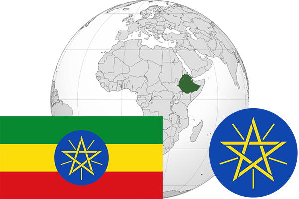

To`liq nomi: Efiopiya Federativ Demokratik Respublikasi
Region: Sharqiy Afrika
Qonunchilik shakli: Respublika
Mustaqillik kuni : 5 -may 1941 yil (Italiyadan)
Poytaxt: Addis-Abeba
Maydoni: 1 104 300 km² (dunyoda 27 -o`rinda )
Chegaradosh davlatlari: Sudan, Eritreya, Jibuti, Somali, Keniya
Aholisi: 90 076 012 (dunyoda 14 - o`rinda, 2015 -yil roʻyxat)
Aholi zichligi: 82,58 /km²
Aholining o`rtacha yoshi: 49,25 yil ( 50,4 ayollar, 48,1 erkaklar)
Rasmiy tili: Amxar tili
Dini: 40% xristian, 40% musulmon qolgan qismi mahalliy dinlar
Pul birligi: Efiopiya biri
Telefon prefiksi: +251
Internet domen: .et
Xalqaro tashkilotlarga a`zoligi: BMT (1945 – yildan)
Dengiz va okeanlarga chiqishi: Yo`q
YIM: Butun: $ 159 mlrd , Jon boshiga: $ 2880 (2015 - yil roʻyxati)
Yirik shaharlari: Addis-Abeba